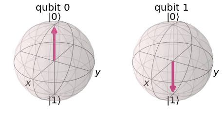

¿Qué es la computación cuántica?
La computación cuántica es un modelo de cálculo que aprovecha fenómenos de la mecánica cuántica para procesar información. Un computador clásico guarda los datos en bits, que valen 0 o 1. Uno cuántico usa cúbits (qubits), sistemas físicos como iones atrapados, átomos neutros o circuitos superconductores que, mientras dura el cálculo, pueden encontrarse en una combinación de los estados 0 y 1.
Esto no convierte al computador cuántico en una versión simplemente más rápida del clásico. Funciona con reglas distintas y resulta útil para problemas concretos en los que esas reglas permiten atajos. Para tareas cotidianas, como navegar por internet o escribir un documento, no ofrece ninguna ventaja.
Conceptos fundamentales
Cuatro ideas explican casi todo el funcionamiento de un computador cuántico. Las analogías de la tabla son aproximadas y sirven solo como punto de partida.
| Concepto | Qué significa | Analogía aproximada |
|---|---|---|
| Cúbit | Unidad básica de información cuántica; su estado es una combinación de 0 y 1. | Una flecha que puede apuntar en muchas direcciones, no solo hacia arriba o hacia abajo |
| Superposición | Un cúbit tiene asociada una amplitud para el 0 y otra para el 1 al mismo tiempo. | Una moneda girando en el aire, que todavía no es cara ni sello |
| Entrelazamiento | Dos o más cúbits quedan correlacionados y ya no se describen por separado. | Dos monedas cuyos resultados coinciden siempre al medirlas |
| Interferencia | Las amplitudes se suman o se cancelan, lo que permite reforzar respuestas correctas. | Las ondas en el agua, que se suman o se anulan al cruzarse |
| Decoherencia | El entorno perturba al cúbit y destruye su estado cuántico. | El ruido de una sala que impide escuchar una conversación |

¿Cómo se realiza un cálculo?
Un algoritmo cuántico no prueba todas las respuestas a la vez. Se diseña para que, mediante interferencia, la respuesta correcta tenga una probabilidad alta de aparecer al final, cuando se mide. Los algoritmos más conocidos son el de Shor (1994), que factoriza números enteros, y el de Grover (1996), que acelera búsquedas de manera cuadrática. Sus posibles usos se describen en la página de aplicaciones potenciales.
- Se preparan los cúbits en un estado inicial conocido.
- Se aplican compuertas cuánticas, que modifican amplitudes y entrelazan cúbits.
- Se miden los cúbits, y cada medición entrega un 0 o un 1.
- Se repite el proceso muchas veces y se analiza la estadística de los resultados.
Limitaciones y mitos frecuentes
El obstáculo técnico principal es que los cúbits son muy frágiles: el ruido y la decoherencia introducen errores que crecen con la duración del cálculo. Por eso se investiga la corrección de errores, cuyos resultados más recientes se resumen en la página de avances recientes.
- Mito: "un computador cuántico prueba todas las soluciones a la vez". La superposición por sí sola no basta; hace falta un algoritmo que use la interferencia.
- Mito: "reemplazará a los computadores actuales". Se espera que trabaje como acelerador para tareas específicas, junto con computadores clásicos.
- Mito: "más cúbits siempre significa mejor máquina". Importan también la tasa de error, la conectividad y la corrección de errores.